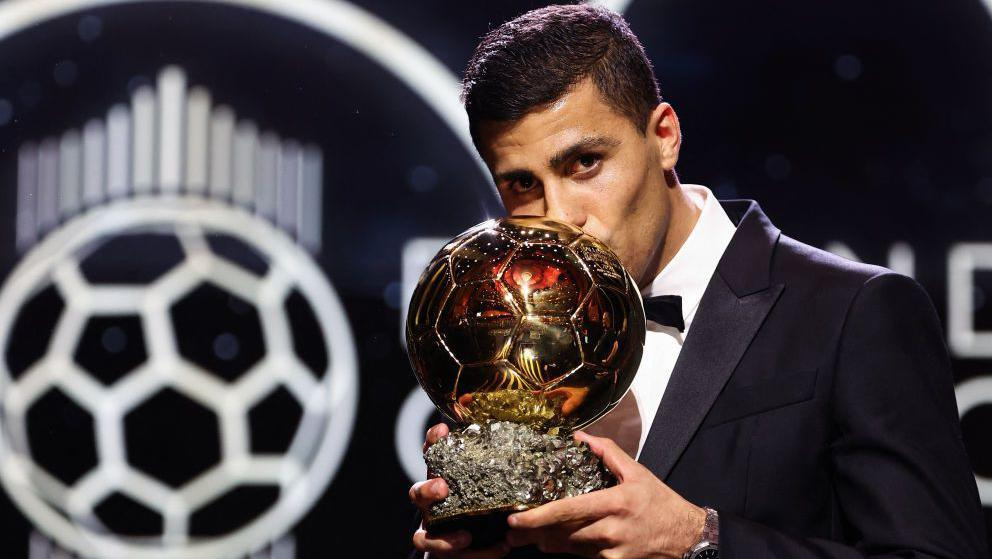

Rodri is a Spanish footballer who has represented Spain at the UEFA European Under-21 Championship. He is a key player for Manchester City and has won the Premier League title in his first season at the club. Rodri has a strong, physical player who is excellent in the air and is also a good passer of the ball.
Rodri's ballon d'Or was awarded to him in 2019 by the UEFA European Under-21 Championship. This award was given to the player who has demonstrated the highest level of performance, reliability, and consistency in his career. The award was named after the 1996 UEFA Champions League winning team, Manchester City.
Defensive Prowess: Rodri excelled in his defensive duties, shielding the backline and breaking up opposition attacks. His ability to read the game and intercept passes was crucial in maintaining City's defensive solidity. Ball Distribution: He possessed exceptional passing accuracy and vision, initiating attacks from deep and playing key passes to create scoring opportunities. Physicality and Leadership: Rodri's strong physical presence allowed him to dominate midfield battles and win crucial duels. He also emerged as a vocal leader on the pitch, guiding his teammates and organizing the team's defensive shape. Impact on Spain's Euro 2024 Triumph:
Defensive Anchor: Rodri played a pivotal role in Spain's Euro 2024 victory, providing a solid defensive foundation and contributing to their clean sheets. Ball-Playing Ability: His ability to dictate the tempo of the game and distribute the ball effectively helped Spain control possession and create scoring chances. Overall Impact and Recognition:
Consistent Performances: Rodri maintained a high level of performance throughout the season, demonstrating his reliability and consistency. Team Success: His contributions were instrumental in Manchester City's Premier League and Champions League triumphs, as well as Spain's Euro 2024 success. Recognition from Peers: Many football experts and former players acknowledged Rodri's outstanding performances and his impact on his teams' success. While some may argue that other players, such as Vinicius Junior, deserved the award, Rodri's all-round excellence and crucial role in his team's successes made him a strong contender. His Ballon d'Or win highlighted the increasing recognition for defensive midfielders and their importance in modern football.
Rodri joined Manchester City from Atlético Madrid in 2019 for a fee of £62.8 million, making him the most expensive Spanish player in history at the time. He has since established himself as a key player for City, winning the Premier League title in his first season at the club.
Rodri is a strong, physical player who is excellent in the air. He is also a good passer of the ball and has a good range of shooting. He is a versatile player who can play in a number of different positions in midfield. Rodri is a Spanish international and has represented his country at the Under-19, Under-21, and senior levels. He was part of the Spain squad that won the 2019 UEFA European Under-21 Championship..
Rodri is a highly respected player who is admired for his work ethic, professionalism, and leadership qualities. He is a role model for young players and is considered to be one of the best defensive midfielders in the world ⚽.